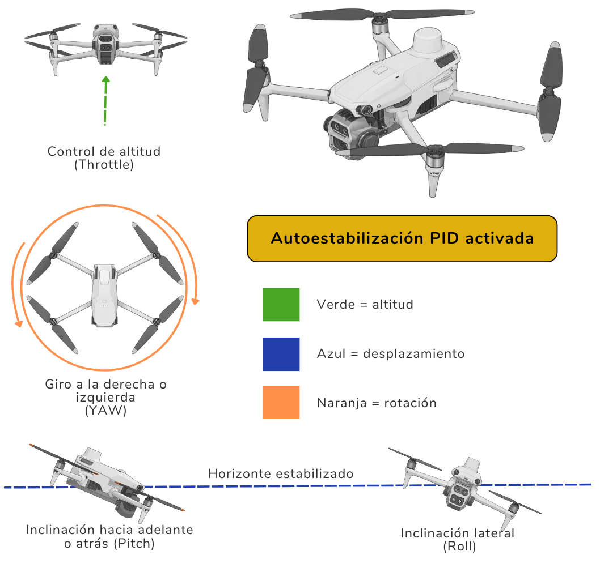
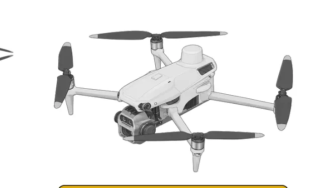
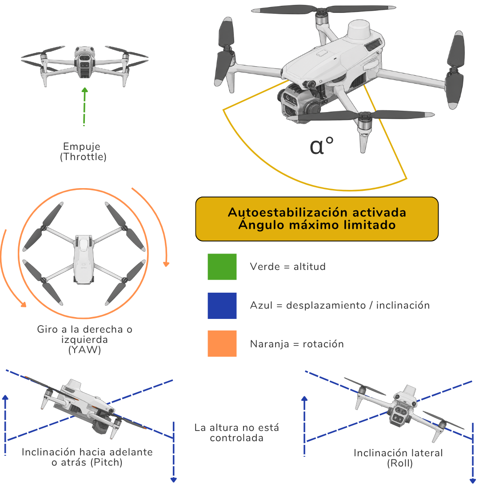
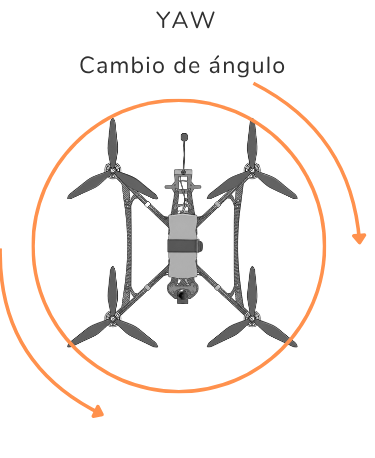
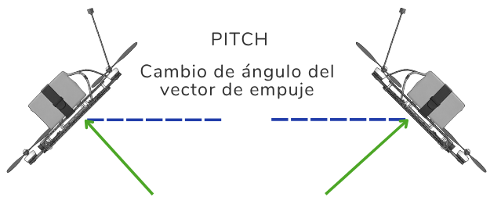
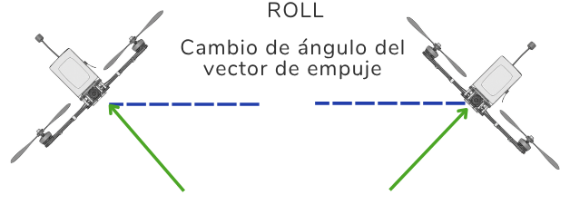
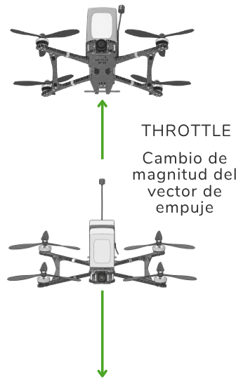
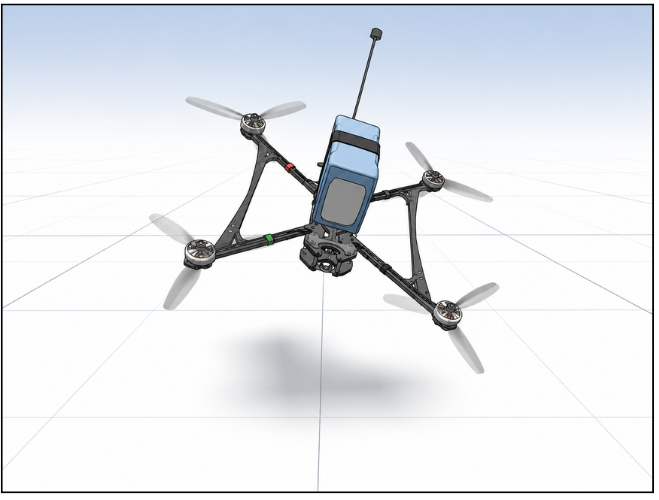
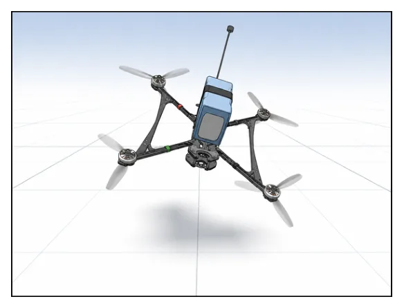

Modos HORIZON / ANGLE / ACRO
Guía de consulta basada en el manual original. Las páginas del PDF se abren en otra pestaña y las capturas pueden consultarse sin perder tu lugar.
PÁGINA 55 Tipos de vuelo - HORIZON

Ver recorte anterior de la página (referencia)

Tipos de vuelo - HORIZON
Control de altitud
(Throttle)
Autoestabilización PID activada
Verde = altitud
Azul = desplazamiento
Giro a la derecha o
izquierda
Naranja = rotación
(YAW)
Horizonte estabilizado
Inclinación hacia adelante
o atrás (Pitch) Inclinación lateral
(Roll)
FLIGHT TYPE - HORIZON
El dron vuela estabilizado priorizando mantener la altura a pesar del ángulo de desplazamiento en el plano horizontal , es decir, el vuelo sigue la lìnea de horizonte. El roll y pitch en este caso son de desplazamiento longitudinal. El yaw se mantiene como rotación en el eje vertical. El throttle se usa como control de altitud.
PÁGINA 56 Tipos de vuelo - ANGLE

Tipos de vuelo - ANGLE
α°
Empuje (Throttle)
Autoestabilización activada
Ángulo máximo limitado
Verde = altitud
Azul = desplazamiento / inclinación
Giro a la derecha o
izquierda
Naranja = rotación
(YAW)
La altura no está
controlada
Inclinación hacia adelante
Inclinación lateral
o atrás (Pitch)
(Roll)
FLIGHT TYPE - ANGLE
El Throttle actúa como fuerza de empuje. El dron se desplaza en el plano horizontal en un ángulo máximo determinado que no solo provoca el movimiento longitudinal en los ejes horizontales sino también en el vertical por el plano inclinado que se forma. La rotación en el eje vertical se mantiene.
PÁGINA 57 Tipos de vuelo - ACRO





Ver recorte anterior de la página (referencia)

Tipos de vuelo - ACRO
YAW
PITCH Cambio de ángulo
Cambio de ángulo del
vector de empuje
ROLL
Cambio de ángulo del
vector de empuje
THROTTLE
Cambio de magnitud del
vector de
empuje
Rotación libre en los 3 ejes
Sin autoestabilización El dron no mantiene el vuelo
Sin límite de ángulo
nivelado
FLIGHT TYPE - ACRO
El Throttle actúa como fuerza de empuje. La rotación es libre en cualquiera de los 3 ejes roll, pitch y yaw haciendo que converjan las dos fuerzas intervinientes en la altitud del dron: el empuje y la gravedad.